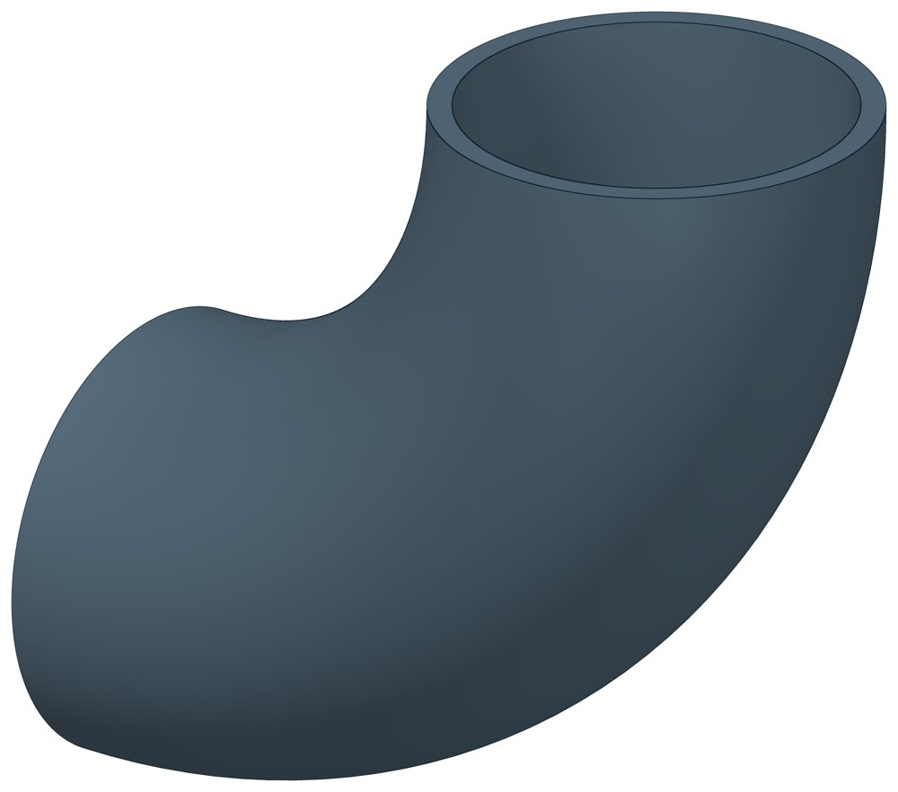

Отвод стальной крутоизогнутый 90°
Крутоизогнутый отвод под приварку: поворачивает трубопровод на 90°. Радиус гиба — полтора условных диаметра, сталь 20.

- Диаметр трубы Dн
- 21,3–1440 мм
- Документ
- ГОСТ 17375-2001
- Исполнений
- 131
- Масса
- 0,04–743 кг
- Цена в магазине
- 12–476 410 ₽
- 3D-модели
- у 114 из 131 исполнений
Применение и монтаж
Назначение: где применяется
Трубопроводы из углеродистой стали с наружным диаметром от 21,3 мм. Отвод подбирают по наружному диаметру и толщине стенки трубы, к которой его приваривают.
Отличия от соседних типов
Та же форма из низколегированной стали для холодного климата — Отводы 09Г2С. Изменить диаметр трубопровода — Переходы.
D — наружный диаметр, T — толщина стенки, F — расстояние от торца до центра гиба, R — радиус гиба по оси. Масса — по таблице ГОСТ 17375-2001; у отводов диаметром 32–45 мм — расчётная, в стандарте она округлена до 0,1 кг.
Таблица исполнений
| Обозначение | Код ПРОМБУРГ | Dмм | Tмм | DN | Fмм | Rмм | Цена₽ | Массакг | Артикул | Магазин | 3D |
|---|---|---|---|---|---|---|---|---|---|---|---|
| 21,3×2 | ПБ-ОТВ-0021-1 | 21,3 | 2 | 15 | 28 | 28 | 12 | 0,04 | TEN1883 | Купить | 3D |
| 21,3×3,2 | ПБ-ОТВ-0021-2 | 21,3 | 3,2 | 15 | 28 | 28 | 18 | 0,06 | TEN1884 | Купить | 3D |
| 26,9×2 | ПБ-ОТВ-0027-1 | 26,9 | 2 | 20 | 29 | 29 | 15 | 0,06 | TEN1885 | Купить | 3D |
| 26,9×3,2 | ПБ-ОТВ-0027-2 | 26,9 | 3,2 | 20 | 29 | 29 | 22 | 0,08 | TEN1886 | Купить | 3D |
| 32×3 | ПБ-ОТВ-0032-1 | 32 | 3 | 25 | 38 | 38 | 20 | 0,128 | TEN1887 | Купить | 3D |
| 33,7×2,3 | ПБ-ОТВ-0034-1 | 33,7 | 2,3 | 25 | 38 | 38 | 19 | 0,11 | TEN1888 | Купить | 3D |
| 33,7×3,2 | ПБ-ОТВ-0034-2 | 33,7 | 3,2 | 25 | 38 | 38 | 29 | 0,16 | TEN1889 | Купить | 3D |
| 38×3 | ПБ-ОТВ-0038-1 | 38 | 3 | 32 | 48 | 48 | 34 | 0,2 | TEN1890 | Купить | 3D |
| 42,4×2,6 | ПБ-ОТВ-0042-1 | 42,4 | 2,6 | 32 | 48 | 48 | 33 | 0,19 | TEN1891 | Купить | 3D |
| 42,4×3,2* | ПБ-ОТВ-0042-2 | 42,4 | 3,2 | — | — | — | 38 | — | TEN1892 | Купить | — |
| 42,4×5 | ПБ-ОТВ-0042-3 | 42,4 | 5 | 32 | 48 | 48 | 54 | 0,35 | TEN1893 | Купить | 3D |
| 45×3 | ПБ-ОТВ-0045-1 | 45 | 3 | 40 | 60 | 60 | 39 | 0,3 | TEN1894 | Купить | 3D |
| 48,3×2,6 | ПБ-ОТВ-0048-1 | 48,3 | 2,6 | 40 | 57 | 57 | 49 | 0,26 | TEN1895 | Купить | 3D |
| 48,3×5 | ПБ-ОТВ-0048-2 | 48,3 | 5 | 40 | 57 | 57 | 58 | 0,47 | TEN1896 | Купить | 3D |
| 57×3 | ПБ-ОТВ-0057-1 | 57 | 3 | 50 | 75 | 75 | 61 | 0,5 | TEN1897 | Купить | 3D |
| 57×3,5 | ПБ-ОТВ-0057-2 | 57 | 3,5 | 50 | 75 | 75 | 63 | 0,6 | TEN1898 | Купить | 3D |
| 57×5 | ПБ-ОТВ-0057-3 | 57 | 5 | 50 | 75 | 75 | 81 | 0,8 | TEN1899 | Купить | 3D |
| 57×6 | ПБ-ОТВ-0057-4 | 57 | 6 | 50 | 75 | 75 | 94 | 1 | TEN1900 | Купить | 3D |
| 57×8* | ПБ-ОТВ-0057-5 | 57 | 8 | — | — | — | 135 | — | TEN1901 | Купить | — |
| 60,3×2,9 | ПБ-ОТВ-0060-1 | 60,3 | 2,9 | 50 | 76 | 76 | 66 | 0,5 | TEN1902 | Купить | 3D |
| 60,3×5,6 | ПБ-ОТВ-0060-2 | 60,3 | 5,6 | 50 | 76 | 76 | 109 | 0,89 | TEN1903 | Купить | 3D |
| 76×3 | ПБ-ОТВ-0076-1 | 76 | 3 | 65 | 100 | 100 | 94 | 0,8 | TEN1904 | Купить | 3D |
| 76×3,5 | ПБ-ОТВ-0076-2 | 76 | 3,5 | 65 | 100 | 100 | 117 | 1 | TEN1905 | Купить | 3D |
| 76×5 | ПБ-ОТВ-0076-3 | 76 | 5 | 65 | 100 | 100 | 141 | 1,4 | TEN1906 | Купить | 3D |
| 76×6 | ПБ-ОТВ-0076-4 | 76 | 6 | 65 | 100 | 100 | 192 | 1,7 | TEN1907 | Купить | 3D |
| 76×8 | ПБ-ОТВ-0076-5 | 76 | 8 | 65 | 100 | 100 | 237 | 2,2 | TEN1908 | Купить | 3D |
| 89×3 | ПБ-ОТВ-0089-1 | 89 | 3 | 80 | 120 | 120 | 129 | 1,2 | TEN1909 | Купить | 3D |
| 89×3,5 | ПБ-ОТВ-0089-2 | 89 | 3,5 | 80 | 120 | 120 | 143 | 1,4 | TEN1910 | Купить | 3D |
| 89×4 | ПБ-ОТВ-0089-3 | 89 | 4 | 80 | 120 | 120 | 177 | 1,5 | TEN1911 | Купить | 3D |
| 89×5 | ПБ-ОТВ-0089-4 | 89 | 5 | 80 | 120 | 120 | 203 | 1,9 | TEN1912 | Купить | 3D |
| 89×6 | ПБ-ОТВ-0089-5 | 89 | 6 | 80 | 120 | 120 | 211 | 2,3 | TEN1913 | Купить | 3D |
| 89×8 | ПБ-ОТВ-0089-6 | 89 | 8 | 80 | 120 | 120 | 311 | 3 | TEN1914 | Купить | 3D |
| 89×9* | ПБ-ОТВ-0089-7 | 89 | 9 | — | — | — | 400 | — | TEN1915 | Купить | — |
| 89×10* | ПБ-ОТВ-0089-8 | 89 | 10 | — | — | — | 445 | — | TEN1916 | Купить | — |
| 102×4 | ПБ-ОТВ-0102-1 | 102 | 4 | 100 | 150 | 150 | 244 | 2,4 | TEN1917 | Купить | 3D |
| 102×5 | ПБ-ОТВ-0102-2 | 102 | 5 | 100 | 150 | 150 | 285 | 2,9 | TEN1918 | Купить | 3D |
| 102×6 | ПБ-ОТВ-0102-3 | 102 | 6 | 100 | 150 | 150 | 364 | 3,4 | TEN1919 | Купить | 3D |
| 102×8 | ПБ-ОТВ-0102-4 | 102 | 8 | 100 | 150 | 150 | 513 | 4,5 | TEN1920 | Купить | 3D |
| 102×10 | ПБ-ОТВ-0102-5 | 102 | 10 | 100 | 150 | 150 | 626 | 5,5 | TEN1921 | Купить | 3D |
| 108×3,5 | ПБ-ОТВ-0108-1 | 108 | 3,5 | 100 | 150 | 150 | 274 | 2,2 | TEN1922 | Купить | 3D |
| 108×4 | ПБ-ОТВ-0108-2 | 108 | 4 | 100 | 150 | 150 | 291 | 2,5 | TEN1923 | Купить | 3D |
| 108×5 | ПБ-ОТВ-0108-3 | 108 | 5 | 100 | 150 | 150 | 331 | 3,1 | TEN1924 | Купить | 3D |
| 108×6 | ПБ-ОТВ-0108-4 | 108 | 6 | 100 | 150 | 150 | 338 | 3,6 | TEN1925 | Купить | 3D |
| 108×8 | ПБ-ОТВ-0108-5 | 108 | 8 | 100 | 150 | 150 | 444 | 4,7 | TEN1926 | Купить | 3D |
| 108×10 | ПБ-ОТВ-0108-6 | 108 | 10 | 100 | 150 | 150 | 660 | 5,8 | TEN1927 | Купить | 3D |
| 114×3,5 | ПБ-ОТВ-0114-1 | 114 | 3,5 | 100 | 150 | 150 | 229 | 2,2 | TEN1928 | Купить | 3D |
| 114×4 | ПБ-ОТВ-0114-2 | 114 | 4 | 100 | 150 | 150 | 269 | 2,6 | TEN1929 | Купить | 3D |
| 114×6 | ПБ-ОТВ-0114-3 | 114 | 6 | 100 | 150 | 150 | 393 | 3,8 | TEN1930 | Купить | 3D |
| 114×8 | ПБ-ОТВ-0114-4 | 114 | 8 | 100 | 150 | 150 | 487 | 5 | TEN1931 | Купить | 3D |
| 114×10 | ПБ-ОТВ-0114-5 | 114 | 10 | 100 | 150 | 150 | 563 | 6,1 | TEN1932 | Купить | 3D |
| 133×3,5 | ПБ-ОТВ-0133-1 | 133 | 3,5 | 125 | 190 | 190 | 404 | 3,3 | TEN1933 | Купить | 3D |
| 133×4 | ПБ-ОТВ-0133-2 | 133 | 4 | 125 | 190 | 190 | 387 | 3,8 | TEN1934 | Купить | 3D |
| 133×5 | ПБ-ОТВ-0133-3 | 133 | 5 | 125 | 190 | 190 | 502 | 4,8 | TEN1935 | Купить | 3D |
| 133×6 | ПБ-ОТВ-0133-4 | 133 | 6 | 125 | 190 | 190 | 609 | 5,7 | TEN1936 | Купить | 3D |
| 133×8 | ПБ-ОТВ-0133-5 | 133 | 8 | 125 | 190 | 190 | 745 | 7,4 | TEN1937 | Купить | 3D |
| 133×10 | ПБ-ОТВ-0133-6 | 133 | 10 | 125 | 190 | 190 | 820 | 9,1 | TEN1938 | Купить | 3D |
| 133×12 | ПБ-ОТВ-0133-7 | 133 | 12 | 125 | 190 | 190 | 1 187 | 11 | TEN1939 | Купить | 3D |
| 159×4,5 | ПБ-ОТВ-0159-1 | 159 | 4,5 | 150 | 225 | 225 | 628 | 6,1 | TEN1940 | Купить | 3D |
| 159×6 | ПБ-ОТВ-0159-2 | 159 | 6 | 150 | 225 | 225 | 773 | 8,1 | TEN1941 | Купить | 3D |
| 159×8 | ПБ-ОТВ-0159-3 | 159 | 8 | 150 | 225 | 225 | 997 | 11 | TEN1942 | Купить | 3D |
| 159×10 | ПБ-ОТВ-0159-4 | 159 | 10 | 150 | 225 | 225 | 1 494 | 13 | TEN1943 | Купить | 3D |
| 159×12 | ПБ-ОТВ-0159-5 | 159 | 12 | 150 | 225 | 225 | 1 465 | 16 | TEN1944 | Купить | 3D |
| 159×14 | ПБ-ОТВ-0159-6 | 159 | 14 | 150 | 225 | 225 | 2 185 | 18 | TEN1945 | Купить | 3D |
| 168×5 | ПБ-ОТВ-0168-1 | 168 | 5 | 150 | 225 | 225 | 792 | 7,1 | TEN1946 | Купить | 3D |
| 168×6 | ПБ-ОТВ-0168-2 | 168 | 6 | 150 | 225 | 225 | 947 | 8,5 | TEN1947 | Купить | 3D |
| 168×8 | ПБ-ОТВ-0168-3 | 168 | 8 | 150 | 225 | 225 | 1 208 | 11,2 | TEN1948 | Купить | 3D |
| 168×10 | ПБ-ОТВ-0168-4 | 168 | 10 | 150 | 225 | 225 | 1 313 | 14 | TEN1949 | Купить | 3D |
| 219×5 | ПБ-ОТВ-0219-1 | 219 | 5 | 200 | 300 | 300 | 1 419 | 13 | TEN1950 | Купить | 3D |
| 219×6 | ПБ-ОТВ-0219-2 | 219 | 6 | 200 | 300 | 300 | 1 430 | 15 | TEN1951 | Купить | 3D |
| 219×7 | ПБ-ОТВ-0219-3 | 219 | 7 | 200 | 300 | 300 | 1 524 | 17 | TEN1952 | Купить | 3D |
| 219×8 | ПБ-ОТВ-0219-4 | 219 | 8 | 200 | 300 | 300 | 1 770 | 20 | TEN1953 | Купить | 3D |
| 219×10 | ПБ-ОТВ-0219-5 | 219 | 10 | 200 | 300 | 300 | 2 333 | 25 | TEN1954 | Купить | 3D |
| 219×12 | ПБ-ОТВ-0219-6 | 219 | 12 | 200 | 300 | 300 | 2 957 | 29 | TEN1955 | Купить | 3D |
| 219×14 | ПБ-ОТВ-0219-7 | 219 | 14 | 200 | 300 | 300 | 3 467 | 34 | TEN1956 | Купить | 3D |
| 219×16 | ПБ-ОТВ-0219-8 | 219 | 16 | 200 | 300 | 300 | 3 977 | 39 | TEN1957 | Купить | 3D |
| 219×18 | ПБ-ОТВ-0219-9 | 219 | 18 | 200 | 300 | 300 | 4 487 | 44 | TEN1958 | Купить | 3D |
| 273×7 | ПБ-ОТВ-0273-1 | 273 | 7 | 250 | 375 | 375 | 2 731 | 27 | TEN1959 | Купить | 3D |
| 273×8 | ПБ-ОТВ-0273-2 | 273 | 8 | 250 | 375 | 375 | 3 634 | 31 | TEN1960 | Купить | 3D |
| 273×9 | ПБ-ОТВ-0273-3 | 273 | 9 | 250 | 375 | 375 | 3 458 | 35 | TEN1961 | Купить | 3D |
| 273×10 | ПБ-ОТВ-0273-4 | 273 | 10 | 250 | 381 | 381 | 3 962 | 39 | TEN1962 | Купить | 3D |
| 273×12 | ПБ-ОТВ-0273-5 | 273 | 12 | 250 | 375 | 375 | 5 127 | 46 | TEN1963 | Купить | 3D |
| 273×14 | ПБ-ОТВ-0273-6 | 273 | 14 | 250 | 375 | 375 | 6 017 | 54 | TEN1964 | Купить | 3D |
| 273×16 | ПБ-ОТВ-0273-7 | 273 | 16 | 250 | 375 | 375 | 6 687 | 61 | TEN1965 | Купить | 3D |
| 325×7 | ПБ-ОТВ-0325-1 | 325 | 7 | 300 | 450 | 450 | 3 692 | 39 | TEN1966 | Купить | 3D |
| 325×8 | ПБ-ОТВ-0325-2 | 325 | 8 | 300 | 450 | 450 | 4 325 | 45 | TEN1967 | Купить | 3D |
| 325×9 | ПБ-ОТВ-0325-3 | 325 | 9 | 300 | 450 | 450 | 5 392 | 50 | TEN1968 | Купить | 3D |
| 325×10 | ПБ-ОТВ-0325-4 | 325 | 10 | 300 | 450 | 450 | 5 303 | 56 | TEN1969 | Купить | 3D |
| 325×12 | ПБ-ОТВ-0325-5 | 325 | 12 | 300 | 450 | 450 | 6 622 | 66 | TEN1970 | Купить | 3D |
| 325×14 | ПБ-ОТВ-0325-6 | 325 | 14 | 300 | 450 | 450 | 7 642 | 77 | TEN1971 | Купить | 3D |
| 325×16 | ПБ-ОТВ-0325-7 | 325 | 16 | 300 | 450 | 450 | 8 973 | 87 | TEN1972 | Купить | 3D |
| 377×8* | ПБ-ОТВ-0377-1 | 377 | 8 | — | — | — | 5 731 | — | TEN1973 | Купить | — |
| 377×9 | ПБ-ОТВ-0377-2 | 377 | 9 | 350 | 525 | 525 | 6 934 | 68 | TEN1974 | Купить | 3D |
| 377×10 | ПБ-ОТВ-0377-3 | 377 | 10 | 350 | 525 | 525 | 6 680 | 75 | TEN1975 | Купить | 3D |
| 377×12 | ПБ-ОТВ-0377-4 | 377 | 12 | 350 | 525 | 525 | 9 492 | 90 | TEN1976 | Купить | 3D |
| 377×16 | ПБ-ОТВ-0377-5 | 377 | 16 | 350 | 525 | 525 | 11 995 | 119 | TEN1977 | Купить | 3D |
| 426×8 | ПБ-ОТВ-0426-1 | 426 | 8 | 400 | 600 | 600 | 7 325 | 78 | TEN1978 | Купить | 3D |
| 426×9 | ПБ-ОТВ-0426-2 | 426 | 9 | 400 | 600 | 600 | 8 638 | 87 | TEN1979 | Купить | 3D |
| 426×10 | ПБ-ОТВ-0426-3 | 426 | 10 | 400 | 600 | 600 | 8 972 | 97 | TEN1980 | Купить | 3D |
| 426×12 | ПБ-ОТВ-0426-4 | 426 | 12 | 400 | 600 | 600 | 12 341 | 117 | TEN1981 | Купить | 3D |
| 426×16 | ПБ-ОТВ-0426-5 | 426 | 16 | 400 | 600 | 600 | 16 408 | 154 | TEN1982 | Купить | 3D |
| 426×20 | ПБ-ОТВ-0426-6 | 426 | 20 | 400 | 600 | 600 | 20 276 | 192 | TEN1983 | Купить | 3D |
| 530×8* | ПБ-ОТВ-0530-1 | 530 | 8 | — | — | — | 11 720 | — | TEN1984 | Купить | — |
| 530×9 | ПБ-ОТВ-0530-2 | 530 | 9 | 500 | 750 | 750 | 14 718 | 138 | TEN1985 | Купить | 3D |
| 530×10 | ПБ-ОТВ-0530-3 | 530 | 10 | 500 | 750 | 750 | 13 830 | 153 | TEN1986 | Купить | 3D |
| 530×12 | ПБ-ОТВ-0530-4 | 530 | 12 | 500 | 750 | 750 | 19 104 | 183 | TEN1987 | Купить | 3D |
| 530×14 | ПБ-ОТВ-0530-5 | 530 | 14 | 500 | 750 | 750 | 22 859 | 212 | TEN1988 | Купить | 3D |
| 530×16 | ПБ-ОТВ-0530-6 | 530 | 16 | 500 | 750 | 750 | 25 810 | 242 | TEN1989 | Купить | 3D |
| 630×8* | ПБ-ОТВ-0630-1 | 630 | 8 | — | — | — | 20 066 | — | TEN1990 | Купить | — |
| 630×9 | ПБ-ОТВ-0630-2 | 630 | 9 | 600 | 900 | 900 | 20 500 | 198 | TEN1991 | Купить | 3D |
| 630×10 | ПБ-ОТВ-0630-3 | 630 | 10 | 600 | 900 | 900 | 20 979 | 219 | TEN1992 | Купить | 3D |
| 630×12 | ПБ-ОТВ-0630-4 | 630 | 12 | 600 | 900 | 900 | 28 011 | 261 | TEN1993 | Купить | 3D |
| 630×16 | ПБ-ОТВ-0630-5 | 630 | 16 | 600 | 900 | 900 | 39 027 | 345 | TEN1994 | Купить | 3D |
| 720×8* | ПБ-ОТВ-0720-1 | 720 | 8 | — | — | — | 26 136 | — | TEN1995 | Купить | — |
| 720×9 | ПБ-ОТВ-0720-2 | 720 | 9 | 700 | 1000 | 1000 | 28 000 | 248 | TEN1996 | Купить | 3D |
| 720×10 | ПБ-ОТВ-0720-3 | 720 | 10 | 700 | 1000 | 1000 | 33 519 | 275 | TEN1997 | Купить | 3D |
| 720×12 | ПБ-ОТВ-0720-4 | 720 | 12 | 700 | 1000 | 1000 | 36 332 | 329 | TEN1998 | Купить | 3D |
| 720×16 | ПБ-ОТВ-0720-5 | 720 | 16 | 700 | 1000 | 1000 | 50 161 | 436 | TEN1999 | Купить | 3D |
| 820×8* | ПБ-ОТВ-0820-1 | 820 | 8 | — | — | — | 40 000 | — | TEN2000 | Купить | — |
| 820×9 | ПБ-ОТВ-0820-2 | 820 | 9 | 800 | 1200 | 1200 | 41 020 | 339 | TEN2001 | Купить | 3D |
| 820×10 | ПБ-ОТВ-0820-3 | 820 | 10 | 800 | 1200 | 1200 | 45 590 | 376 | TEN2002 | Купить | 3D |
| 820×12 | ПБ-ОТВ-0820-4 | 820 | 12 | 800 | 1200 | 1200 | 51 802 | 450 | TEN2003 | Купить | 3D |
| 820×14 | ПБ-ОТВ-0820-5 | 820 | 14 | 800 | 1200 | 1200 | 61 647 | 524 | TEN2004 | Купить | 3D |
| 820×20 | ПБ-ОТВ-0820-6 | 820 | 20 | 800 | 1200 | 1200 | 88 368 | 743 | TEN2005 | Купить | 3D |
| 1020×12* | ПБ-ОТВ-1020-1 | 1020 | 12 | — | — | — | 83 445 | — | TEN2006 | Купить | — |
| 1020×14* | ПБ-ОТВ-1020-2 | 1020 | 14 | — | — | — | 99 619 | — | TEN2007 | Купить | — |
| 1020×20* | ПБ-ОТВ-1020-3 | 1020 | 20 | — | — | — | 137 356 | — | TEN2008 | Купить | — |
| 1220×12* | ПБ-ОТВ-1220-1 | 1220 | 12 | — | — | — | 118 488 | — | TEN2009 | Купить | — |
| 1220×14* | ПБ-ОТВ-1220-2 | 1220 | 14 | — | — | — | 142 044 | — | TEN2010 | Купить | — |
| 1220×22* | ПБ-ОТВ-1220-3 | 1220 | 22 | — | — | — | 217 403 | — | TEN2011 | Купить | — |
| 1440×14* | ПБ-ОТВ-1440-1 | 1440 | 14 | — | — | — | 178 259 | — | TEN2012 | Купить | — |
| 1440×36* | ПБ-ОТВ-1440-2 | 1440 | 36 | — | — | — | 476 410 | — | TEN2013 | Купить | — |
* Примечания к исполнениям:
- 42,4×3,2, 57×8, 89×9, 89×10, 377×8, 530×8 и ещё 11 — Такого сочетания диаметра и стенки в ГОСТ 17375-2001 нет: размеры и масса — по запросу
Цена — из магазина promburg.ru на дату редакции каталога 12.10.2026, ₽ за штуку; актуальную цену и наличие уточняйте при заказе.
Чтобы заказать, сообщите обозначение и код ПРОМБУРГ: +7 (499) 325-51-35, promburg@yandex.ru.
Нормативные документы
- ГОСТ 17375-2001 Детали трубопроводов бесшовные приварные из углеродистой и низколегированной стали. Отводы крутоизогнутые типа 3D (R=1,5 DN). Конструкция — документ, по которому изготавливается изделие
Типовые решения с этим изделием
- Типовое решение узла: участок тепловой сети Ду 200 с осевым сильфонным компенсатором ПБ-ТР-200-01 · от 20 000 ₽
На трубу Dн 21,3–1440 мм в каталоге
Позиции каталога с исполнениями на те же наружные диаметры трубы.
Опоры и подвески
- Опора неподвижная двухупорная ТС-660 общих Dн: 20
- Опоры приварные неподвижные скользящие ОПН общих Dн: 20
- Опоры бескорпусные неподвижные ОБН общих Dн: 19
- Опорные плиты диэлектрические ТС-632 общих Dн: 18
- Опоры неподвижные ППУ-ОЦ (ПЭ) ППУ неподвижная общих Dн: 18
- Опоры скользящие ППУ-ПЭ(ОЦ) ППУ скользящая общих Dн: 18
- Опоры сварные скользящие неподвижные и направляющие СТО 79814898-130 общих Dн: 17
- Опора приварная скользящая и неподвижная ОСТ 34-10-616-93 общих Dн: 17
- Опоры хомутовые скользящие ОСТ 34-10-617-93 общих Dн: 17
- Опоры хомутовые неподвижные ОСТ 34-10-618-93 общих Dн: 17
- Опоры скользящие неподвижные ОСТ 34-10-623-93 общих Dн: 17
- Блок подвески с опорной балкой ОСТ 34-10-726-93 общих Dн: 17
- Опоры хомутовые и скользящие неподвижные и направляющие СТО 79814898-131 общих Dн: 16
- Хомутовые опоры СК 2109-92 общих Dн: 15
И ещё 98 типов — в оглавлении каталога.
Компенсаторы
- Компенсатор сильфонный КС общих Dн: 22
- Компенсатор сильфонный КСО общих Dн: 22
- Компенсатор сильфонный сейсмический общих Dн: 22
- Компенсатор сильфонный 2ОПКР общих Dн: 17
- Компенсатор сильфонный 2ОПКР (ИЯНШ) 2ОПКРИ общих Dн: 17
- Компенсатор сильфонный 2СКУ.М 2СКУМ общих Dн: 17
- Компенсатор сильфонный 2СКУ.М (ИЯНШ) 2СКУМИ общих Dн: 17
- Компенсатор сильфонный 2СКУ.ППМ (ИЯНШ) 2СКУППМИ общих Dн: 17
- Компенсатор сильфонный 2СКУ.ППУ (ИЯНШ) 2СКУППУИ общих Dн: 17
- Компенсатор сильфонный 2СКУ.ППУ/ОЦ (ИЯНШ) 2СКУППУОЦИ общих Dн: 17
- Компенсатор сильфонный КСО (ИЯНШ) КСОИ общих Dн: 17
- Компенсатор сильфонный КСОФ общих Dн: 17
- Компенсатор сильфонный ОПКР общих Dн: 17
- Компенсатор сильфонный ОПКР (ИЯНШ) ОПКРИ общих Dн: 17
И ещё 21 тип — в оглавлении каталога.
Другие детали
- Фланец стальной воротниковый общих Dн: 22
- Фланец стальной плоский приварной общих Dн: 22
- Заглушка стальная эллиптическая общих Dн: 16
- Отвод стальной крутоизогнутый 90°, 09Г2С общих Dн: 15
- Переход стальной концентрический общих Dн: 13
- Днище стальное эллиптическое общих Dн: 7
- Отвод нержавеющий 90° общих Dн: 2
- Тройник стальной равнопроходный общих Dн: 1
Другие типы раздела
Детали трубопроводов (отводы, переходы, фланцы, заглушки, днища, тройники)
- Днище стальное эллиптическое
- Заглушка стальная эллиптическая
- Отвод стальной крутоизогнутый 90°, 09Г2С
- Отвод нержавеющий 90°
- Переход стальной концентрический
- Тройник стальной равнопроходный
- Фланец стальной воротниковый
- Фланец стальной плоский приварной
- Фланцы прочие
Частые вопросы
Что указать в заявке, чтобы получить цену без уточнений?
Обозначение с номером исполнения или код ПБ, количество, Dн и стенку трубы, расчётную температуру наружного воздуха, покрытие, город доставки и желаемый срок. Кнопка «В заявку» в таблице собирает спецификацию, которую можно выгрузить в Excel или отправить письмом.
Какой радиус гиба у отводов?
Отводы каталога приведены по ГОСТ 17375-2001: радиус гиба около полутора условных проходов. Для отвода 108 мм (Ду 100) R = 150 мм, для 219 мм (Ду 200) — 300 мм. Отводы с радиусом около одного условного прохода — это другой стандарт, ГОСТ 30753-2001.
Масса в таблице — фактическая?
Нет, справочная: в стандартах масса рассчитана по номинальным размерам. У переходов в ГОСТ 17378-2001 это масса трубной заготовки — готовый переход легче.
Есть ли отводы на 45°, 60° и 180°?
В таблицах каталога — отводы 90°. ГОСТ 17375-2001 предусматривает также 45° и 180°, а для отечественного ряда диаметров и 60°; такие позиции уточняйте при заказе.
Детали подбирают по Ду или по наружному диаметру?
Приварные детали — отводы, переходы, тройники, заглушки, днища — по наружному диаметру и толщине стенки трубы, запись вида 219×6. Фланцы — по условному проходу Ду и давлению Ру.